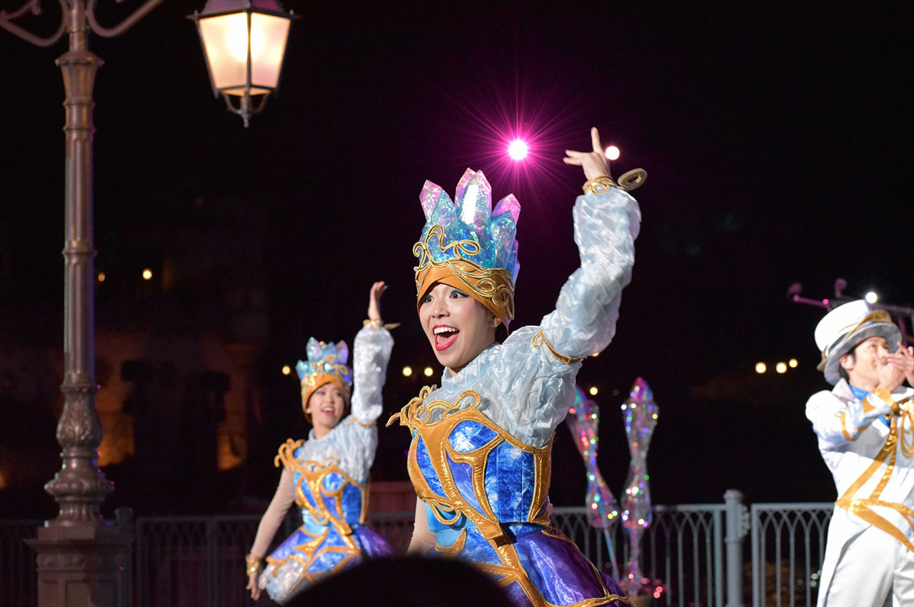

ディズニーはプログレ
東京ディズニーシー (TDS) 開園15周年記念ショーである「クリスタルウィッシュジャーニー」、略してクリジャ (CWJ？) を観ていて、やはりディズニーはプログレだなと思ったので、プログレなところを挙げていく。
ついでにクリジャの写真を「Nikon D5600 + AF-P DX NIKKOR 70-300mm f/4.5-6.3G ED VR」で撮っていたので、何枚か載せてみる。元の JPG は 6000x4000px と巨大なので、縮小し、若干画質を落としている。リサイズ以外の画像編集は行っていないので、「この程度の機材だとこの程度の写真が撮れる」という参考にしていただければと思う。
写真の下には「撮影日 - シャッタースピード、絞り値、ISO、焦点距離 (35mm 換算時の焦点距離)」を記載している。
音源を聴きながらドウゾ
いずれ消されるかもしれないが、CD 音源が上がっていたので、コチラをお聴きいただきながら、ディズニーがいかにプログレなのかを検証していこうと思う。
2017-02-04 - 1/1250sec, f/8, ISO-320, 250mm (375mm)
↑プログレの始まり
1曲がやたら長い
プログレはアルバム全体で1つの組曲のように構成されていたり、1曲が10分・15分を超えるようなものも多い。
クリスタルウィッシュジャーニーも同じように、1曲で29分もある。
ディズニーの楽曲は全体的にプログレなのだ。

2017-01-28 - 1/400sec, f/6.3, ISO-5000, 75mm (112mm)
↑ダンサーもプログレしている。
変拍子・転調が多用される
プログレッシヴ・ロックの楽曲は演奏技巧に走ることが多く、テンポやピッチが頻繁に変わったりする。
クリジャにおいても、これまでのディズニーショーの楽曲と比べても圧倒的にテンポチェンジ、転調が多く、技巧的である。
特に、上の CD 音源でいう 4:57～5:17 あたりはココだけ切り取ってループ再生するレベルで本気でカッコイイので必聴。
ディズニーは頻繁にプログレしているのだ。
2017-01-28 - 1/400sec, f/7.1, ISO-5000, 122mm (183mm)
↑グーフィバグっとる
クラシック音楽との融合 (クロスオーバー) が行われる
プログレはクラシック音楽やジャズを織り交ぜた実験的な音楽が多い。
クリジャも多くのクラシック曲を取り入れており、1940年に映画「ピノキオ」の主題歌として発表された「星に願いを」や「Hi-Diddle-Dee-Dee」、1947年の「南部の唄」に登場する「Zip-A-Dee-Doo-Dah」など、現代楽曲に取り入れるには実験的なラインナップであるといえる。
ディズニーは引用の仕方がプログレなのだ。
2017-01-28 - 1/400sec, f/7.1, ISO-5000, 70mm (105mm)
↑プログレした動き
他ジャンルとのミクスチャーも多い
プログレはクラシックだけでなく、現代の他ジャンルの要素を取り入れることも多い。プログレというジャンルは、ミクスチャーロックの一種とも言えるだろう。
先ほど挙げた楽曲「Zip-A-Dee-Doo-Dah」は、原曲こそ70年前に発表されたものであるが、クリジャにおいてのミックスの仕方はというと、ターンテーブルのスクラッチ音とサンプリングボイスを織り交ぜながら、テンポよく繋げている。明らかにヒップホップの要素が強く、単なるバンドミュージックとは一線を画す、技巧的・芸術的なミックス (引用) になっているのだ。
ディズニーは複雑技巧な引用手法がプログレなのだ。
2017-01-15 - 1/400sec, f/13, ISO-500, 240mm (360mm)
↑後ろのダンサーさんの複雑技巧な表情…
終わったかと思ったらまた始まる
プログレは何故か、音が小さくなっていったり、「ジャン！」なんつってキメたりして、「終わったか」と思わせておいてまた曲が始まる、という構成が多い。全然終わってないのだ。
クリジャも同じで、
ダンサー含め決めポーズで静止して、おぉー終わりましたなーと思って拍手とかするのにまた ＼ジャジャジャジャン!／ とかいって始まってみせたり、
花火まで打ち上げて終わったみたいにしてるのにドラムが ＼ﾄﾞｩﾙﾙﾝ ﾀﾝｯ!!／ なんつって再開してみたりする。
完全にプログレじゃねえかディズニー。
2017-01-28 - 1/400sec, f/7.1, ISO-5000, 70mm (105mm)
↑クリスタルブルーさんにおちょくられるシェリーメイ。こうしたアドリブも混ぜるあたり超絶テクを持つプログレ集団…
アルバム1枚で活動終了したりする
プログレのバンドは、楽曲同様何考えてるのか分からないことが多い。せっかく名盤を生んだのに直後に解散して、ディスコグラフィが1枚しかないバンドがいたりする。
クリジャも同じで、この15周年イベントの1回ぽっきりで解散することが決まっている。次回は全く違うショー・音楽になるというのだ。

2017-01-28 - 1/400sec, f/8, ISO-5000, 70mm (105mm)
↑最高過ぎるだろ……
寂しすぎる。クリジャ終わらないで…… (´;ω;`)
↓ショー全体を CD 化したものはコチラ。

↓「シャイン・オン！」バージョンは以下に入ってるらしいです。